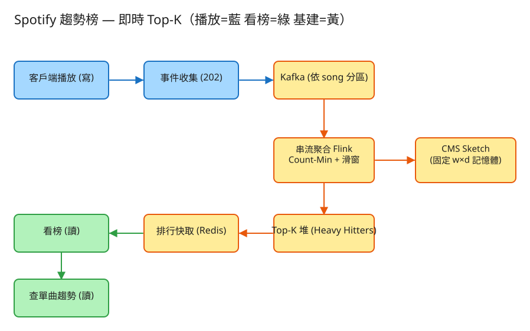

D 串流計算/儲存分發 看故事就懂 輕鬆讀 25 分鐘
想像你是 Spotify 的店長。全世界每秒有幾十萬人按下播放鍵。老闆要你隨時掛一塊牌子在牆上： 「現在最紅的 100 首歌」，而且要幾秒鐘就更新一次。
Spotify 趨勢榜就是在做這件事。它的難，難在三點：播放事件多到數不完、要幾乎即時排出名次、而且榜單要反映「現在紅」而不是「歷史總紅」。
很多人第一個反應是：「播放幾次，老老實實一筆一筆數不就好了？」問題在於——量大到你數不動。先用一個生活經驗錨定：
趨勢榜也一樣：要精確記住「每一首歌被播了幾次」，得替上億首歌各留一個計數器，記憶體會直接爆掉。 但榜單根本不需要分毫不差——你只想知道「誰是前 100 名」，第 3 名播了 183 萬還是 183 萬零 5 次，沒人在乎。
所以這題的核心心法就是：用一個「小小的、固定大小的量杯」去估每首歌大概播幾次， 換來「記憶體小到不可思議、還能跑超快」。這個神奇量杯有個名字，叫 Count-Min Sketch（近似計數草圖）。
💭 停一下：為什麼「排行榜」這種題目特別適合用「估個大概」，但「銀行帳戶餘額」就絕對不行？
別被「即時串流排行系統」這串字嚇到。整件事其實就是闖 4 關，一關一關來：
全世界每秒幾十萬人按播放，每按一次就產生一筆播放事件（哪首歌、誰、什麼時候、哪個地區）。 第一關只做一件事：趕快把事件收下、排進隊伍，立刻說「收到」，不要讓使用者卡著等。
事件從隊伍裡一筆筆出來。每來一筆「歌 A 被播了」，系統就用那個神奇量杯（Count-Min Sketch）替歌 A 的計數 +1。
查某首歌大概播幾次時，就看它對應的那幾格、取裡面最小的那個數字——因為被灌水只會讓數字變大， 取最小的那格，最接近真相。重點是：這塊板子大小固定，不管你有 1 億首還是 10 億首歌，記憶體都一樣大。
量杯只能「給一首歌估個數字」，但它不會自己吐出「前 100 名是誰」。所以還要一個小小的排行榜（只放 100 格）。
這就是「近似量杯 + 100 格排行榜」的經典組合：量杯負責估分，排行榜負責隨時維護「目前最紅的前 K 名」。
最後一關最關鍵，也最容易被忽略。如果只是「累計總播放」，那榜上永遠是幾年來的老神曲—— 新歌再爆紅也擠不上去。但「趨勢榜」要的是現在正在紅的歌。
這個「定期把分數打折讓舊的淡出」的動作叫 時間衰減。它就是「總量榜」和「趨勢榜」的分水嶺。
工程上的「取捨」聽起來很抽象。換個方式記：這個系統最怕三件事，每個設計都是為了避開某個「怕」。

✏️ 用 Excalidraw 開啟編輯（diagram.excalidraw）白話導讀，由左到右一路看：
看完上面，這些詞你其實都已經懂了，這裡只是把「工程術語 ↔ 白話」對起來，Part 2 會用到：
| 工程術語 | 白話解釋 |
|---|---|
| 播放事件 | 有人按了播放鍵，產生的一筆紀錄（哪首歌、誰、何時、哪區） |
| Count-Min Sketch | 估數量的「小量杯」：大小固定，估出來只會偏多一點點 |
| 取 min（最小值） | 查一首歌時看好幾格、取最小那格——因為被灌水只會變大 |
| Top-K | 前 K 名（例如前 100 名） |
| min-heap（小頂堆） | 那個「100 格 VIP 席」，隨時知道席內分數最低的是誰 |
| 時間衰減 | 定期把分數打折，讓舊播放像新聞一樣「退燒」 |
| 滑動視窗 | 只看「最近 1 小時 / 24 小時」這段時間的播放 |
| 串流處理 (Flink) | 事件一筆筆流過時就邊流邊算的工人 |
| Kafka | 超大排隊水管，把瞬間的爆量「攤平」慢慢給後面處理 |
| 分區 (partition) | 把水管分成好幾條，同一首歌的事件固定走同一條 |
| 物化 / 快取 (Redis) | 把算好的榜「貼到公告欄」，看榜的人只看公告欄（超快） |
| 最終一致 | 榜可以稍微舊一點（落後幾秒），不必每一刻都絕對最新 |
| QPS | 每秒幾筆請求（衡量「多忙」的單位） |
| API | 系統之間講好的「點餐單」格式：你給我什麼、我回你什麼 |
我們估幾個關鍵數字（數字不必背，重點是感受它的「形狀」）：
| 估什麼 | 大概數字 | 所以呢？ |
|---|---|---|
| 每秒幾筆播放（寫） | 5 億人每天聽 30 次 ≈ 每秒 17 萬筆（尖峰 ×3 ≈ 50 萬） | 量大到不能「精確一筆筆數」 |
| 有多少首歌 | 曲庫約 1 億首 | 各留計數器 → 記憶體會爆 |
| 精確計數要多少記憶體 | 1 億首 × 每首約 16 位元組 ≈ 1.6 GB，再 ×多視窗×多地區 | 這就是「為什麼要估」的原因 |
| 小量杯要多少記憶體 | 固定一塊板子 ≈ 5.4 MB（跟歌曲數量無關！） | 用一點誤差，換 300 倍記憶體省下來 |
| 看榜的查詢（讀） | 幾萬 QPS，全部走公告欄（快取） | 讀很快、不打擾後面算的人 |
💭 停一下：「寫」（每秒幾十萬筆播放）遠多於「讀」（看榜）。這跟一般網站「讀多寫少」相反，那設計重點該擺哪？
這題只要記住三張「點餐單」：
① 上報一筆播放事件（超高頻，先收下就好）
POST /api/v1/events
給我：{ 歌ID, 使用者ID, 時間, 地區 }
我回：202「收到了！」← 立刻回，不讓你等榜算完為什麼「立刻回 202」？因為按播放的使用者不該卡著等我們把整個榜算完。先收下、丟進大水管（Kafka），後面非同步慢慢聚合。就像餐廳收單給號碼牌，不讓你站在櫃台等餐。
② 看排行榜（只看公告欄，超快）
GET /api/v1/trending?window=1h®ion=global&k=100
我回：200 { 視窗:"1h", 更新時間:"...", 前K名:[
{名次:1, 歌ID:"s_8821", 分數:1832450}, ... ] }可以挑時間視窗（過去 1 小時 / 24 小時 / 7 天）和地區（全球榜 / 台灣榜）。這些榜都是事先算好貼在公告欄的，所以查起來飛快。
③ 查單一首歌「大概」播幾次
GET /api/v1/songs/{歌ID}/score?window=1h
我回：200 { 歌ID:"s_8821", 估計值:1832450, 視窗:"1h" }注意回的是「估計值」，不是精確值——因為這是小量杯估出來的（只會偏多一點點）。對排行榜來說，這個精度綽綽有餘。
每筆播放一列：歌ID、使用者ID、時間、地區、裝置。它是只往後加、不修改的串流，
依歌ID 分流——這樣同一首歌的事件都落到同一個工人手上，計數不用跨工人合併。
這不是傳統資料表，而是工人邊算邊記在腦中的東西：一塊固定大小的計數板（Count-Min Sketch）估每首歌頻率， 加一個 100 格的 VIP 席（min-heap）維護目前前 K 名。每個「時間視窗 × 地區」各有一份。
把算好的前 K 名序列化貼到公告欄，鑰匙是 (視窗 + 地區)，設個短短的有效期（TTL，幾秒～幾分）。
看榜的人全部只看這張公告欄——讀超快，也不會去吵後面忙著算的工人。
| 哪裡會塞車 | 怎麼拓寬 |
|---|---|
| 瞬間爆量的播放事件衝垮系統 | 用 Kafka 大水管「攤平」尖峰，後面慢慢消化（削峰） |
| 1 億首歌精確計數 → 記憶體爆 | 改用固定大小的小量杯（Count-Min Sketch） |
| 一個工人算不完全世界的歌 | 依歌ID 分流給多個工人並行算，各自的量杯再逐格相加合併 |
| 看榜的查詢去吵忙著算的工人 | 把榜貼到公告欄（Redis），看榜全走公告欄 |
| 多個時間視窗 × 多個地區，組合爆炸 | 把時間切成小桶，多個視窗共用相加；地區榜各自分流聚合 |
「Part 1 的三個怕」是核心取捨。這裡補幾個常被面試官追問的：
讀十遍不如玩一遍。這題有一個真的可以跑的小程式，讓你親眼看到「近似計數 + Top-K + 衰減」：
# 啟動（在這題的 demo 資料夾裡）
cd demo
php -S localhost:8006 -t public
# 然後瀏覽器打開 http://localhost:8006玩過 demo 了，來掀開引擎蓋看看「那幾關到底是哪幾段程式做的」。 好消息：核心只有三個小檔，剛好對應前面講的工作。不用會 PHP，我把程式翻成白話、只留關鍵那幾行，看註解就懂。
核心就是一塊固定 d 排 × w 格的計數板。每首歌用名字算出「該記在哪幾格」，播一次就在那幾格各 +1：
// 計數板：d 排、每排 w 格，全部從 0 開始
// 不管 1 億首還是 10 億首歌，板子大小固定不變 ← 記憶體可控的關鍵
function 哪一格(第幾排, 歌名) {
雜湊 = crc32(歌名 + 這排專屬種子) // 每排用不同種子 → 算出不同位置
return 雜湊 % w // 落在 0 ~ w-1 的某一格
}
function 計入(歌名) {
for (第幾排 = 0 .. d-1)
板子[第幾排][ 哪一格(第幾排, 歌名) ] += 1 // 每排都 +1（共 d 格）
}這就是「舀一小量杯估個大概」的板子。不同的歌偶爾會擠到同一格（撞格子），所以某格可能被別人灌水、偏多一點——但板子大小固定，這正是它省記憶體的本錢。
查一首歌大概幾次時，看它對應的那 d 格、取最小的那個：
function 估計(歌名) {
最小值 = 無限大
for (第幾排 = 0 .. d-1)
最小值 = min( 最小值, 板子[第幾排][ 哪一格(第幾排, 歌名) ] )
return 最小值 // ← 被灌水只會變大，取最小那格最接近真相
}為什麼取 min？因為撞格子只會讓數字變大、不會變小，所以那幾格裡最小的那個，最接近真值。這也是 demo 頁面上「估計值永遠 ≥ 真值」的由來。
💭 停一下：為什麼不取那幾格的「平均」或「最大」，偏偏要取「最小」？
這是「總量榜」變「趨勢榜」的分水嶺。每隔一輪，把整塊板子的每一格都乘上一個衰減係數（例如 0.9）：
function 衰減(λ) { // λ 例如 0.9
for (每一格 in 板子)
每一格 = floor(每一格 × λ) // 全部打 9 折，舊播放一輪一輪淡掉
}就像新聞熱度會退燒：每打一次折，舊播放的影響就淡一截，而新播放是用「+1」剛加進來的、幾乎沒被打折。連打幾輪，最近狂飆的新歌自然浮上來、陳年老歌往下沉——這就是趨勢榜的靈魂。
小量杯只能「給一首歌估個數字」，不會自己吐出前 K 名是誰。所以另外擺一個只有 K 格的 VIP 席。每來一筆播放，先讓量杯 +1、估出最新分數，再嘗試擠進席位：
function 餵入(歌名) {
量杯.計入(歌名) // ① 先讓小量杯 +1
分數 = 量杯.估計(歌名) // ② 估出這首歌最新分數
if (歌名 已在席內) { 更新它的分數; return } // 已在榜上 → 刷新分數
if (席內還沒坐滿 K 個) { 收進來; return } // 還有空位 → 直接坐進來
// 席滿了：找出「目前席內分數最低的那位」
最低者 = 席內分數最小的歌
if (分數 > 最低者的分數) { // ③ 新人比最低的高 → 換人
踢掉 最低者
收進 歌名
}
}這就是「100 格 VIP 席 + 門口保鏢盯著最低分那位」。量杯估分數、VIP 席排名次，兩個缺一不可——這是這題最常被考倒的點。demo 為了好懂用一個迴圈找最低者；真實系統把它換成 min-heap（小頂堆），堆頂永遠是最低分，換人是 O(log K)——邏輯一模一樣，只是換更快的工具。
打完折別忘了：席內每首歌的分數都變小了，要用量杯重新估一次、刷新席位分數，舊歌才會真的往下掉：
function 席位衰減(λ) {
量杯.衰減(λ) // 整塊板子先打折（退燒）
for (歌名 in 席內每一位)
席內[歌名] = 量杯.估計(歌名) // 用打折後的板子重估，刷新席位分數
}這樣「最近沒人播」的老歌分數會一路下滑、可能跌出榜，反映趨勢變化。
最後，因為 PHP 內建伺服器每次請求是從零開始的，要把工人腦中的板子與席位存進一個 JSON 檔，下次請求才能接著累積：
function 存檔(狀態) { // 狀態 = { 板子, 席位, 精確值, 事件數 }
寫入 state.json（json 格式, 加檔案鎖避免並行寫壞）
}
function 讀檔() {
if (檔案不存在) return 空狀態 // 空狀態裡放一塊全 0 的新板子
return 從 state.json 還原回來
}demo 還順手存了一份「精確計數」，純粹是為了在頁面上跟量杯估計值對照，讓你親眼看到「估計值 ≥ 真值」的誤差。真實系統不會這樣存，這份精確值只是教學用的對照組。
| 關卡（前面講的） | 哪個檔 | 關鍵那段 |
|---|---|---|
| ② 用小量杯估每首歌幾次 | CountMinSketch | 計入() + 估計() 取 min |
| ④ 讓榜退燒 | CountMinSketch | 衰減() 整塊板子打折 |
| ③ 挑前 K 名 | TopK | 餵入() 的「換人」判斷 |
| 把狀態存起來 | EventStore | 存檔() / 讀檔() |
👉 重點：真實系統會把「JSON 檔 + 迴圈找最低者」換成「Redis / Flink 串流邊流邊算 + min-heap + state backend」， 但上面這幾段「近似計數取 min、量杯估分 VIP 席排名、定期打折退燒」的邏輯一字都不用改。所以讀懂這個小 demo，你就讀懂了這題的核心。
先不要看答案，自己用講給朋友聽的方式回答看看（講得出來才是真的懂）：
Spotify 趨勢榜 = 對數不完的播放估個大概，挑出現在最紅的前 K 名。
4 個關卡：① 驗票口收事件 → ② 小量杯（Count-Min Sketch）估每首歌大概幾次 → ③ 100 格 VIP 席（min-heap）挑前 K 名 → ④ 時間衰減讓舊播放退燒。
3 個怕：怕記憶體爆（用近似換固定大小）、怕太慢卡使用者（先收下、非同步算）、怕榜過時（衰減+秒級刷新）。
工程細節一句話：先估「每秒幾十萬筆」的爆量 → 用「點餐單(API)」溝通、收到事件先回 202 → 事件走 Kafka 大水管、依歌ID 分流給多工人 → 小量杯只會偏多取 min、量杯估分 VIP 席排名 → 算好的榜貼到 Redis 公告欄供快讀。
想看更精簡、面試速查用的版本？👉 前往完整版（同樣內容的工程速查格式）。